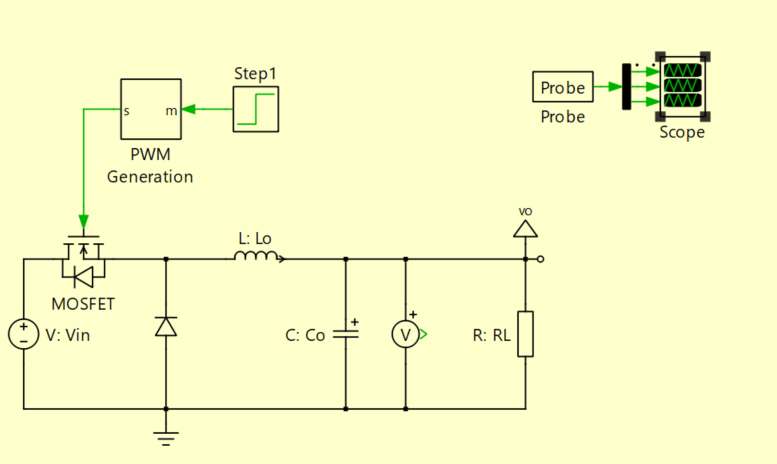
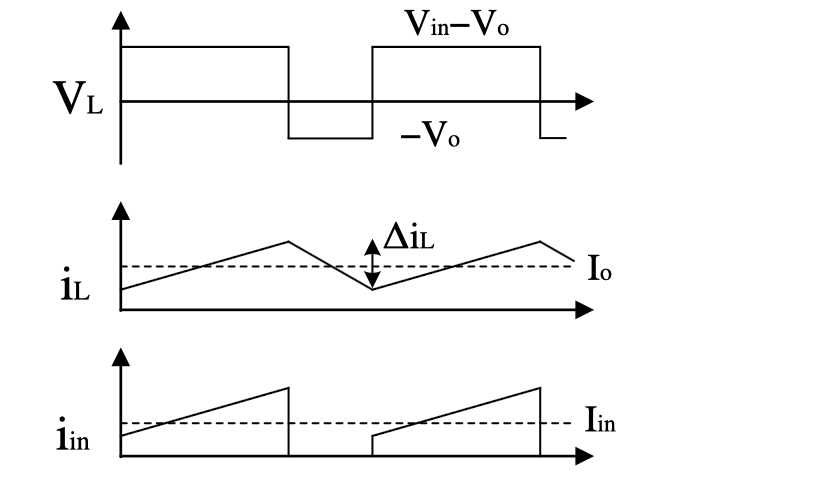
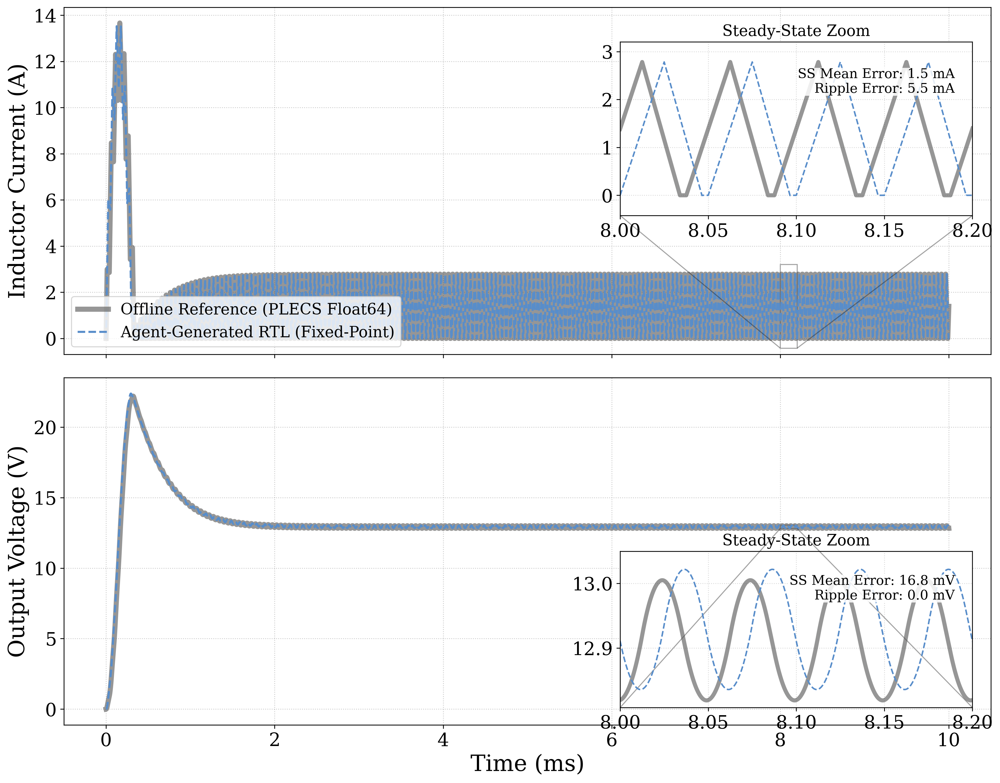

- 1 Requirements
- 2 Mathematical Modeling
- 3 Code Generation
- 4 Simulation
- 5 Integration & Results
System Topology

Type: Asynchronous Buck
Mode: CCM + DCM
fsw: 20 kHz
Control Signals

D = 0.5
fsw: 20 kHz
CCM/DCM auto-detect
Design Summary
- Project Name buck_converter
- Input Voltage 24 V
- Inductance Lo 100 µH
- Capacitance Co 100 µF
- Load Resistance 10 Ω
- Switching Freq. 20 kHz (D = 0.5)
- Topology Asynchronous buck
- Control Mode CCM / DCM
- Target Platform Zynq-7020 (XC7Z020)
- Time Step (Δt) 50 ns
- Fixed-Point Format Q6.26
Code Generated
Resource Usage
-
LUT
4.28% (2,278 / 53,200)
-
FF
<0.1% (65 / 106,400)
-
BRAM
0% (0 / 140)
-
DSP48E1
2.7% (6 / 220)
tcalc < 10 ns · Δtrequired = 50 ns · RTL path: 177 levels (unrolled combinational)
Simulation Results (Real-time)

vC SS mean err = 16.77 mV (<0.15%)
iL ripple err < 5.46 mA (<0.05%)
Mathematical Model (Physical Agent)
State variables:
Continuous-time model (CCM):
DCM clamp (diode blocks when iL ≤ 0): switches to a third topological mode with A, B re-derived and iL held at zero — preventing the naive negative reverse-current error of a time-invariant model.
Discretization (Forward Euler, Ts = Δt = 50 ns):
Q6.26 fixed-point
Golden Reference: model_fixed.c
Code Generation (Code Agent)
Code Generated